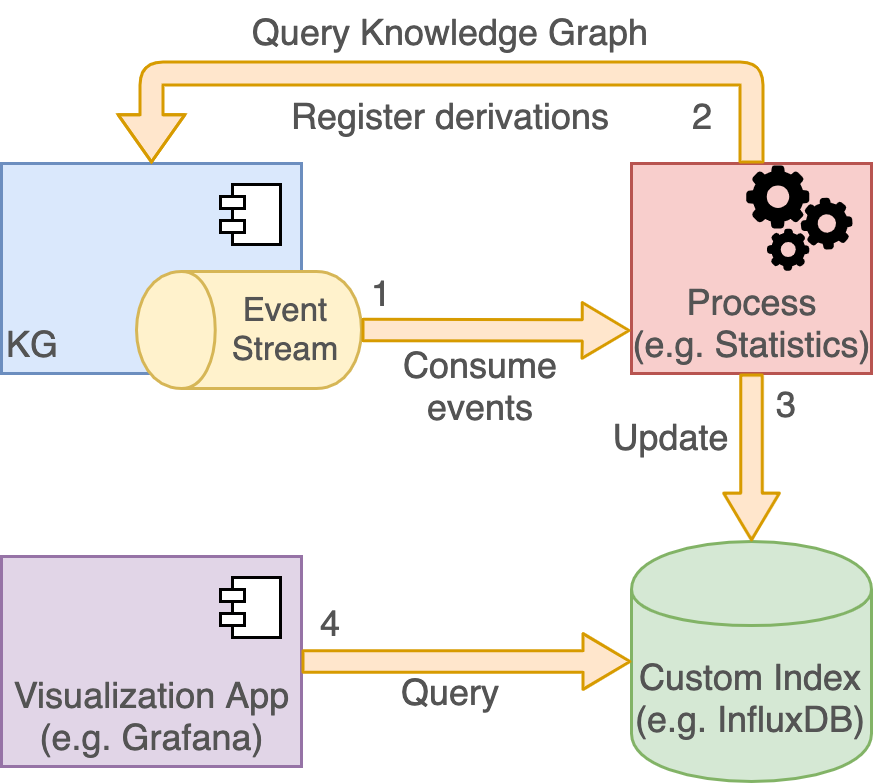
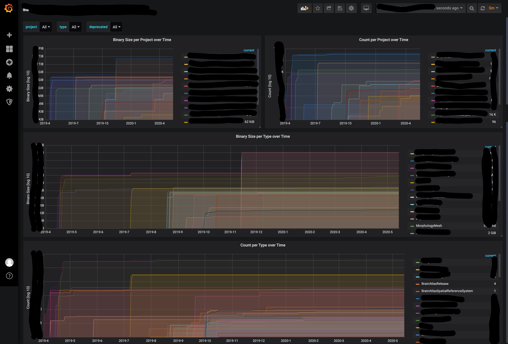

Indexing data in other systems
Introduction
Blue Brain Nexus supports out of the box document and RDF graph based indices of the data through Elasticsearch, Sparql and Composite views. These cover a wide range of requirements but may not suffice in certain cases. New indexing capabilities can be added using external processes that subscribe to the global event log, enrich the information and project the result in arbitrary stores.
By exposing over HTTP(S) the event log using the Server-Sent Events W3C recommendation, Blue Brain Nexus allows clients to replicate the internal streaming approach, and the push based asynchronous service communication for resource projections.

An example of such a tool is the newly introduced docker image (bluebrain/nexus-cli) that supports projecting data to InfluxDB and PostgreSQL databases. The image is yet another software artifact in the Blue Brain Nexus ecosystem that complements the system to introduce new indexing capabilities that are not part of the core.
It functions as described above following a simple streaming approach with the following stages:
- subscribe to the global event log of the KG service
- for each individual event (change in the system) collect additional information about the change and the current state of the resource; the information is collected by querying the Sparql view defined in the project where the change occurred
- the collected information is projected to a target system (InfluxDB or PostgreSQL) by performing an insert or update
The sections below describe how each of the newly supported projections work and how one would configure them.
Projecting data into InfluxDB
In order to compute statistics about various kinds of data hosted in Blue Brain Nexus, like volume over time, a time series database like InfluxDB is a very good solution.
The following example shows how one could use the bluebrain/nexus-cli docker image, InfluxDB and Grafana to continuously compute statistics about data evolution in each project in Blue Brain Nexus.
To start, let’s set up an influxdb docker container running in the background:
docker run -p 8086:8086 -d -e INFLUXDB_DATA_MAX_VALUES_PER_TAG=0 --name influx influxdb:1.8.0
The additional environment variable INFLUXDB_DATA_MAX_VALUES_PER_TAG disables the limit of maximum tag values for measurements.
We can now configure the projection using two config files (env.conf and influx.conf in the HOCON format) that will be mounted to the nexus-cli container:
mkdir config
echo '
env {
endpoint = ${NEXUS_ENDPOINT}
token = ${NEXUS_TOKEN}
http-client {
retry {
strategy = "exponential"
initial-delay = 100 millis
max-delay = 20 seconds
max-retries = 10
condition = "on-server-error"
}
}
default-sparql-view = "https://bluebrain.github.io/nexus/vocabulary/defaultSparqlIndex"
}
' > config/env.conf
echo '
influx {
endpoint = ${NEXUS_INFLUXDB_ENDPOINT}
database = ${NEXUS_INFLUXDB_DATABASE}
db-creation-command = """CREATE DATABASE """"${influx.database}"""" WITH DURATION 10000d REPLICATION 1 SHARD DURATION 7d NAME """"${influx.database}"""""""
offset-file = ${NEXUS_INFLUXDB_OFFSET_FILE}
offset-save-interval = 5 minutes
default-sparql-query = """
PREFIX ns:<https://neuroshapes.org/>
PREFIX schema:<http://schema.org/>
PREFIX nxv:<https://bluebrain.github.io/nexus/vocabulary/>
SELECT ?project ?type ?created ?deprecated ?bytes WHERE {
<{resource_id}> nxv:createdAt ?created .
<{resource_id}> nxv:deprecated ?deprecated .
OPTIONAL {
<{resource_id}> schema:distribution ?d .
?d a schema:DataDownload .
?d schema:contentSize ?cs .
?cs schema:value ?bytesValue .
}
BIND("{resource_project}" AS ?project)
BIND(REPLACE("{resource_type}", "^.*/([^/]+)$", "$1") AS ?type)
BIND(IF(BOUND(?bytesValue),?bytesValue,0) AS ?bytes)
}
"""
projects {
bbp/atlas {
types = [
{
type = ${nrs}"BrainAtlasRelease"
query = ${influx.default-sparql-query}
measurement = "distribution"
values = ["bytes"]
timestamp = "created"
},
{
type = ${nrs}"BrainAtlasSpatialReferenceSystem"
query = ${influx.default-sparql-query}
measurement = "distribution"
values = ["bytes"]
timestamp = "created"
}
]
}
}
}
nrs = "https://neuroshapes.org/"
' > config/influx.conf
The env.conf file defines a set of global properties that will be read from the process environment variables like for example the NEXUS_ENDPOINT or the NEXUS_TOKEN to be used for connecting to the system and how errors should be retried.
The influx.conf file defines how should the execution happen, what projects and types to consider, what queries to be executed for collecting information about each resource and where to project the result.
In this example we will consider that we’d like to index information about resources with the types https://neuroshapes.org/BrainAtlasRelease and https://neuroshapes.org/BrainAtlasSpatialReferenceSystem from the bbp/atlas project. The information that we would like to collect about each of these resources is defined in the variables selected in the SPARQL query, specifically:
?project: the project where the resource is hosted (resources of the same type can be in multiple projects)?type: the type that was used to configure the collection of information (resources may have multiple types, but we may only be interested in one)?created: the timestamp when the resource was initially created?deprecated: whether the resource was deprecated or not?bytes: the number of bytes of the resource distribution
For each of the resources in the system that have the type defined in the configuration a new point will be created in the InfluxDB database using the ?created value as the timestamp, ?bytes as field with its value and the ?project, ?type and ?deprecated as tags.
Obviously some of the information we’re looking for is not necessarily present in the RDF graph, but we can obtain this information by means of templating. The SPARQL select query executed is first processed to replace some well known tokens (supported ones are: resource_id - the id of the resource for which the current change was recorded, resource_project - the project in which the change was recorded, resource_type - the type of the resource that matches the type entry in the configuration and event_rev - the revision of the resource that the current processed event has yielded). Information can thus be passed from the context of each event to the SPARQL select query. The BIND statements allow setting fixed or conditional values to the collected variable patterns:
BIND("{resource_project}" AS ?project)binds the project label (bbp/atlasin this case) to the?projectvariableBIND(REPLACE("{resource_type}", "^.*/([^/]+)$", "$1") AS ?type)binds the tail (curie name) to the?typevariable such that a type likehttps://neuroshapes.org/BrainAtlasReleasewill be bound asBrainAtlasReleaseto the?typevariableBIND(IF(BOUND(?bytesValue),?bytesValue,0) AS ?bytes)binds the value of the selected literal bytes value if it is found in the graph, or the value of0otherwise.
Since the SPARQL query configuration supports templating, the queries can be very efficient. They can select triples with a well defined starting point (the resource id) which are simple for the triple store to handle due to optimal use of indices. Any Sparql query can be executed; the selected variables will be projected as either a timestamp, a field or a tag, depending on the configuration. If the query returns multiple rows only the first one will be considered.
The configuration also mentions a file (NEXUS_INFLUXDB_OFFSET_FILE) where the tool can save its progress such that it can resume from the last event processed in case of restarts.
We’re ready to start the tool:
docker run \
-v $(pwd)/config:/home/nexus/.nexus \
--link=influx \
-e NEXUS_ENDPOINT="https://sandbox.bluebrainnexus.io/v1" \
-e NEXUS_TOKEN="******" \
-e NEXUS_INFLUXDB_ENDPOINT="http://influx:8086" \
-e NEXUS_INFLUXDB_DATABASE="nstats" \
-e NEXUS_INFLUXDB_OFFSET_FILE="/home/nexus/.nexus/influx.offset" \
bluebrain/nexus-cli:1.3.0 influxdb run
The tool will output something like the following (assuming the selected data exists in the system), and it’s going to continue to run, waiting for new changes. The tool uses a continuous subscription, so it will first replay the entire log until it reaches the end and then it’s going to wait for new changes to be recorded in the system.
SLF4J: Failed to load class "org.slf4j.impl.StaticLoggerBinder".
SLF4J: Defaulting to no-operation (NOP) logger implementation
SLF4J: See http://www.slf4j.org/codes.html#StaticLoggerBinder for further details.
Starting influxDB projection...
Read 100 events (success: 0, skip: 100, errors: 0)
Read 200 events (success: 0, skip: 200, errors: 0)
Read 300 events (success: 0, skip: 300, errors: 0)
Read 400 events (success: 0, skip: 400, errors: 0)
Read 500 events (success: 0, skip: 500, errors: 0)
Read 600 events (success: 0, skip: 600, errors: 0)
Read 700 events (success: 0, skip: 700, errors: 0)
Read 800 events (success: 0, skip: 800, errors: 0)
Read 900 events (success: 0, skip: 900, errors: 0)
Read 1000 events (success: 0, skip: 1000, errors: 0)
...
Read 2023400 events (success: 905059, skip: 1118341, errors: 0)
Processed 905100 events (success: 905100, errors: 0)
Read 2023500 events (success: 905159, skip: 1118341, errors: 0)
Processed 905200 events (success: 905200, errors: 0)
The final step is to set up grafana to visualize the time series data recorded.
docker run -p 3000:3000 -d --link=influx --name grafana grafana/grafana:6.4.4
After the grafana container starts successfully, we need to configure it to add the influxdb datasource and create a dashboard to visualize the data:
curl -XPOST -H"Content-Type: application/json" -s http://localhost:3000/api/datasources -u admin:admin -d '
{
"orgId": 1,
"name": "InfluxDB",
"type": "influxdb",
"typeLogoUrl": "",
"access": "proxy",
"url": "http://influx:8086",
"password": "",
"user": "",
"database": "nstats",
"basicAuth": false,
"basicAuthUser": "",
"basicAuthPassword": "",
"withCredentials": false,
"isDefault": false,
"jsonData": {
"httpMode": "GET",
"keepCookies": [],
"timeInterval": "1h"
}
}'
wget https://bluebrainnexus.io/docs/additional-info/grafana-dashboard.json
curl -XPOST -H"Content-Type: application/json" -s http://localhost:3000/api/dashboards/db -d @grafana-dashboard.json
The last command should output something like:
{"id":1,"slug":"blue-brain-nexus-statistics","status":"success","uid":"CjzVq5RMk","url":"/d/CjzVq5RMk/blue-brain-nexus-statistics","version":1}
You can now navigate to the grafana container to view the data at http://localhost:3000 (default username and password are admin:admin). Assuming the configuration matches the data in the Blue Brain Nexus deployment the board should look similar to the following:

Projecting data into PostgreSQL
A lot of users prefer using a relational model with a fixed schema to query data in systems. They’re used to using SQL a query language and wouldn’t necessarily want to learn a new query language like SPARQL to navigate the graph. Additionally, there are a lot of analytics tools that support connecting to RDBMS systems and enable real time queries with strong visualization engines.
In order to address this use case we’ve built the bluebrain/nexus-cli docker image to be used for projecting data into a PostgreSQL database.
The following example shows how one could use the bluebrain/nexus-cli docker image to project a subset of an RDF graph to a strict relational model. The use case we’re going to address in this example is to collect all schema resources in a Blue Brain Nexus instance and identify all transitive dependencies.
To start, let’s set up a postgresql docker container running in the background:
docker run -p 5432:5432 -d -e POSTGRES_PASSWORD=postgres --name postgres library/postgres:12.2
We can now configure the projection using two config files (env.conf and postgres.conf in the HOCON format) that will be mounted to the nexus-cli container:
mkdir config
echo '
env {
endpoint = ${NEXUS_ENDPOINT}
token = ${NEXUS_TOKEN}
http-client {
retry {
strategy = "exponential"
initial-delay = 100 millis
max-delay = 20 seconds
max-retries = 10
condition = "on-server-error"
}
}
default-sparql-view = "https://bluebrain.github.io/nexus/vocabulary/defaultSparqlIndex"
}
' > config/env.conf
echo '
postgres {
host = ${NEXUS_POSTGRES_HOST}
port = ${NEXUS_POSTGRES_PORT}
username = ${NEXUS_POSTGRES_USERNAME}
password = ${NEXUS_POSTGRES_PASSWORD}
database = ${NEXUS_POSTGRES_DATABASE}
offset-file = ${NEXUS_POSTGRES_OFFSET_FILE}
offset-save-interval = 1s
projects {
tutorialnexus/datamodels {
sparql-view = ${env.default-sparql-view}
types = [
{
type = "https://bluebrain.github.io/nexus/vocabulary/Schema"
queries = [
{
table = schemas
ddl =
"""
CREATE TABLE IF NOT EXISTS schemas (
id VARCHAR NOT NULL UNIQUE,
rev INT NOT NULL,
project VARCHAR NOT NULL
);
"""
query =
"""
PREFIX nxv:<https://bluebrain.github.io/nexus/vocabulary/>
PREFIX owl:<http://www.w3.org/2002/07/owl#>
SELECT ?id ?rev ?project
WHERE {
<{resource_id}> a nxv:Schema .
<{resource_id}> nxv:rev ?rev .
BIND("{resource_id}" as ?id) .
BIND("{resource_project}" AS ?project) .
FILTER(?rev >= {event_rev})
}
LIMIT 1
"""
},
{
table = schema_imports
ddl =
"""
CREATE TABLE IF NOT EXISTS schema_imports (
id VARCHAR NOT NULL,
import VARCHAR NOT NULL
);
"""
query =
"""
PREFIX nxv:<https://bluebrain.github.io/nexus/vocabulary/>
PREFIX owl:<http://www.w3.org/2002/07/owl#>
SELECT ?id ?import
WHERE {
<{resource_id}> a nxv:Schema .
<{resource_id}> owl:imports ?import .
<{resource_id}> nxv:rev ?rev .
BIND("{resource_id}" as ?id) .
FILTER(?rev >= {event_rev})
}
"""
}
]
}
]
}
}
}
' > config/postgres.conf
The env.conf file defines a set of global properties that will be read from the process environment variables like for example the NEXUS_ENDPOINT or the NEXUS_TOKEN to be used for connecting to the system and how errors should be retried.
The postgres.conf file defines how should the execution happen, what projects and types to consider, what queries to be executed for collecting information about each resource and where to project the result.
In this example we will collect all resources of type Schema from the tutorialnexus/datamodels and project a subset of the information in two tables. The information that we would like to collect about each of these resources is defined in the variables selected in the SPARQL queries, specifically for the schemas table we’ll collect:
?id: the id of each schema?rev: the last known revision of each schema?project: the project where the schema resides
For the schema_imports table we’ll collect the import relationships:
?id: the id of each schema?import: the id of the schema that is imported by the one identified by?id
The schema_imports table will contain multiple rows for a schema identified by ?id if it defines multiple imports.
Obviously some of the information we’re looking for is not necessarily present in the RDF graph, but we can obtain this information by means of templating. The SPARQL select query executed is first processed to replace some well known tokens (supported ones are: resource_id - the id of the resource for which the current change was recorded, resource_project - the project in which the change was recorded, resource_type - the type of the resource that matches the type entry in the configuration and event_rev - the revision of the resource that the current processed event has yielded). Information can thus be passed from the context of each event to the SPARQL select query. The BIND statements allow setting fixed or conditional values to the collected variable patterns, like for example: the BIND("{resource_project}" AS ?project) binds the project label (tutorialnexus/datamodels in this case) to the ?project variable.
Since the SPARQL query configuration supports templating, the queries can be very efficient. They can select triples with a well defined starting point (the resource id) which are simple for the triple store to handle due to optimal use of indices. Any Sparql query can be executed; the selected variables will be projected as either a timestamp, a field or a tag, depending on the configuration.
The configuration requires the definition of a DDL statement for each type selection. The following type mapping is currently supported by the tool:
| Node Type | DB Type |
|---|---|
| Iri | Character types, such as: char, varchar and text |
| Blank Node | Character types, such as: char, varchar and text |
| http://www.w3.org/2001/XMLSchema#string | Character types, such as: char, varchar and text |
| http://www.w3.org/2001/XMLSchema#long | Numeric types, such as int |
| http://www.w3.org/2001/XMLSchema#int | Numeric types, such as int |
| http://www.w3.org/2001/XMLSchema#integer | Numeric types, such as int |
| http://www.w3.org/2001/XMLSchema#boolean | Boolean |
| http://www.w3.org/2001/XMLSchema#dateTime | Timestamp |
The configuration also mentions a file (NEXUS_POSTGRES_OFFSET_FILE) where the tool can save its progress such that it can resume from the last event processed in case of restarts.
We’re ready to start the tool:
docker run \
-v $(pwd)/config:/home/nexus/.nexus \
--link=postgres \
-e NEXUS_ENDPOINT="https://sandbox.bluebrainnexus.io/v1" \
-e NEXUS_TOKEN="******" \
-e NEXUS_POSTGRES_HOST="postgres" \
-e NEXUS_POSTGRES_PORT="5432" \
-e NEXUS_POSTGRES_DATABASE="postgres" \
-e NEXUS_POSTGRES_USERNAME="postgres" \
-e NEXUS_POSTGRES_PASSWORD="postgres" \
-e NEXUS_POSTGRES_OFFSET_FILE="/home/nexus/.nexus/postgres.offset" \
bluebrain/nexus-cli:1.3.0 postgres run
The tool will output something like the following (assuming the selected data exists in the system), and it’s going to continue to run, waiting for new changes. The tool uses a continuous subscription, so it will first replay the entire log until it reaches the end and then it’s going to wait for new changes to be recorded in the system.
SLF4J: Failed to load class "org.slf4j.impl.StaticLoggerBinder".
SLF4J: Defaulting to no-operation (NOP) logger implementation
SLF4J: See http://www.slf4j.org/codes.html#StaticLoggerBinder for further details.
Starting influxDB projection...
Read 100 events (success: 0, skip: 100, errors: 0)
Read 200 events (success: 0, skip: 200, errors: 0)
Read 300 events (success: 0, skip: 300, errors: 0)
Read 400 events (success: 0, skip: 400, errors: 0)
Read 500 events (success: 0, skip: 500, errors: 0)
Read 600 events (success: 0, skip: 600, errors: 0)
Read 700 events (success: 0, skip: 700, errors: 0)
Read 800 events (success: 0, skip: 800, errors: 0)
Read 900 events (success: 0, skip: 900, errors: 0)
Read 1000 events (success: 0, skip: 1000, errors: 0)
...
Read 238000 events (success: 0, skip: 238000, errors: 0)
Read 238100 events (success: 0, skip: 238100, errors: 0)
Read 238200 events (success: 9, skip: 238191, errors: 0)
Processed 100 events (success: 100, errors: 0)
Read 238300 events (success: 109, skip: 238191, errors: 0)
Read 238400 events (success: 177, skip: 238223, errors: 0)
Read 238500 events (success: 177, skip: 238323, errors: 0)
We can now query the data that has been projected to the PostgreSQL container.
First we need to login:
docker exec -it postgres psql -U postgres
psql (12.2 (Debian 12.2-2.pgdg100+1))
Type "help" for help.
postgres=#
Count the schemas:
postgres=# select count(*) from schemas;
count
-------
176
(1 row)
Find the top 5 schemas with the most direct imports:
postgres=# select id,count(import) from schema_imports group by id order by count desc limit 5;
id | count
------------------------------------------------------+-------
https://neuroshapes.org/commons/entity | 7
https://neuroshapes.org/commons/minds | 6
https://neuroshapes.org/dash/density | 4
https://neuroshapes.org/commons/experimentalprotocol | 4
https://neuroshapes.org/dash/intrasharprecordedcell | 4
(5 rows)
Find all transitive imports of a specific schema:
postgres=# WITH RECURSIVE tree(schema, timport) AS (
SELECT
s.id,
s.import
FROM
schema_imports s
LEFT JOIN
schema_imports p ON s.import = p.id
WHERE
p.id IS NULL
UNION
SELECT
id,
timport
FROM
tree
INNER JOIN
schema_imports on tree.schema = schema_imports.import
)
SELECT * FROM tree where schema = 'https://neuroshapes.org/dash/intrasharprecordedcell';
schema | timport
-----------------------------------------------------+-------------------------------------------------------
https://neuroshapes.org/dash/intrasharprecordedcell | https://neuroshapes.org/commons/labeledontologyentity
https://neuroshapes.org/dash/intrasharprecordedcell | https://provshapes.org/commons/derivation
https://neuroshapes.org/dash/intrasharprecordedcell | https://provshapes.org/commons/invalidation
https://neuroshapes.org/dash/intrasharprecordedcell | https://provshapes.org/commons/generation
https://neuroshapes.org/dash/intrasharprecordedcell | https://neuroshapes.org/commons/language
https://neuroshapes.org/dash/intrasharprecordedcell | https://neuroshapes.org/commons/license
https://neuroshapes.org/dash/intrasharprecordedcell | https://neuroshapes.org/commons/vector3d
https://neuroshapes.org/dash/intrasharprecordedcell | https://neuroshapes.org/commons/propertyvalue
(8 rows)